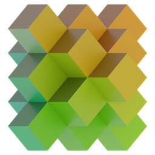

CraftAIB
Minimal Voxel Studio
Image
Map Art
Voxel
Schematic
Viewer
Materials
Settings
Auto-saved locally
Open .LITEMATIC
Open .SCHEM
Open
Save
12:34
↗
SCENE / 01
Skyhold study
Reset image
Reset view
100%
Drop an image here, or click to upload
|‹
▶
›|
00:00
/ 00:30
Export .LITEMATIC
Export Viewer
Export .SCHEM
Export Grid
Export NBT
0s
10s
20s
30s
Image process
Preprocess
Voxel pass
Voxel pass
Palette
Material map